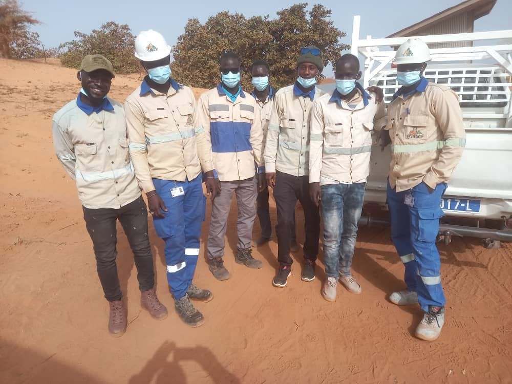
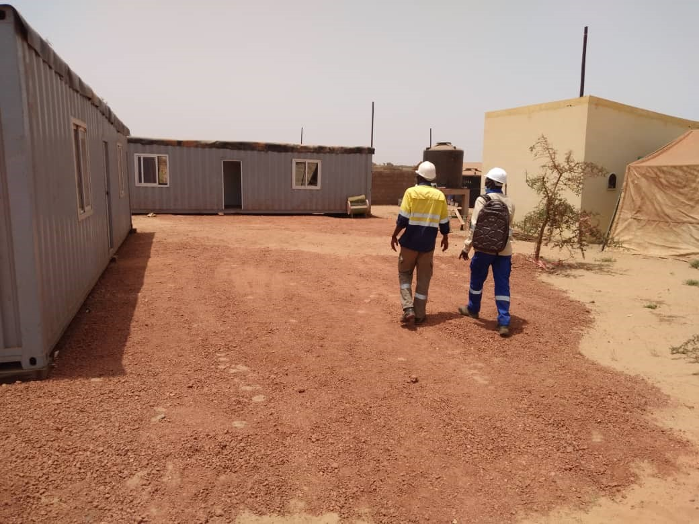
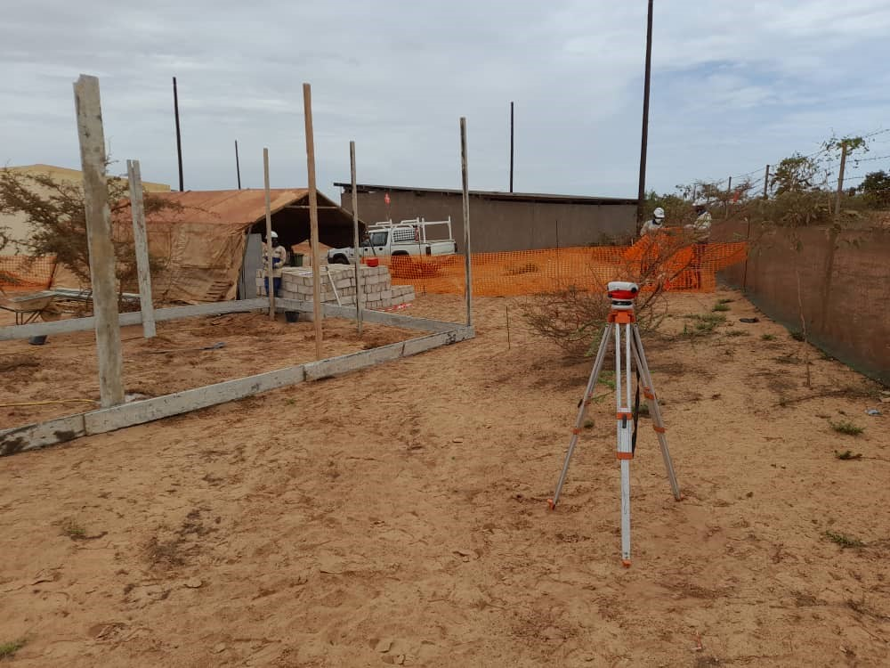
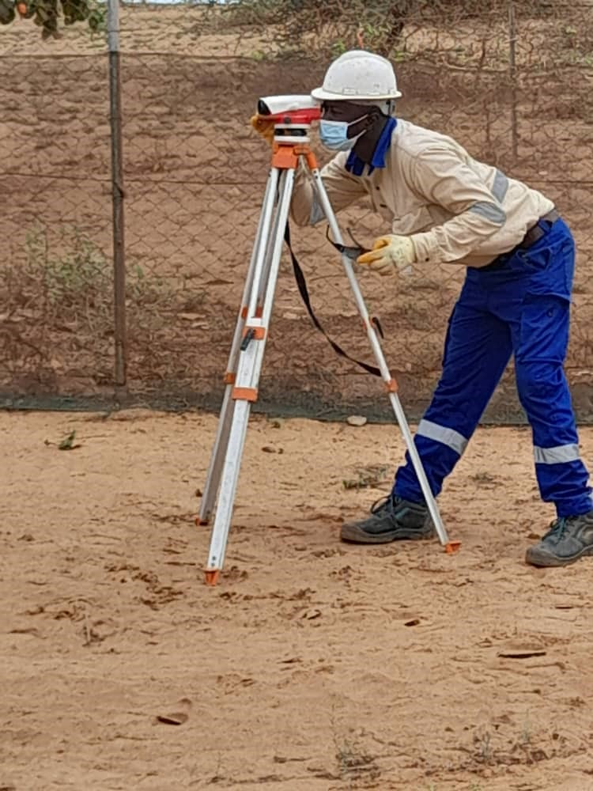
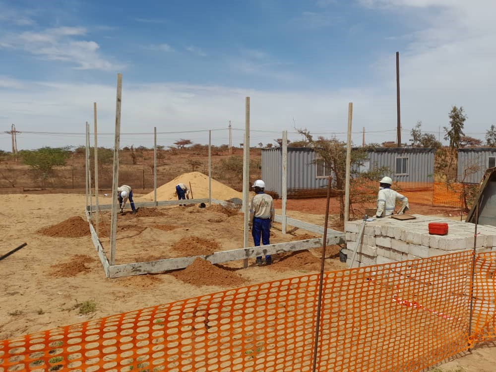
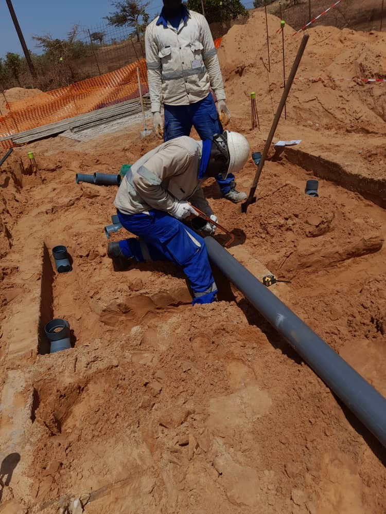
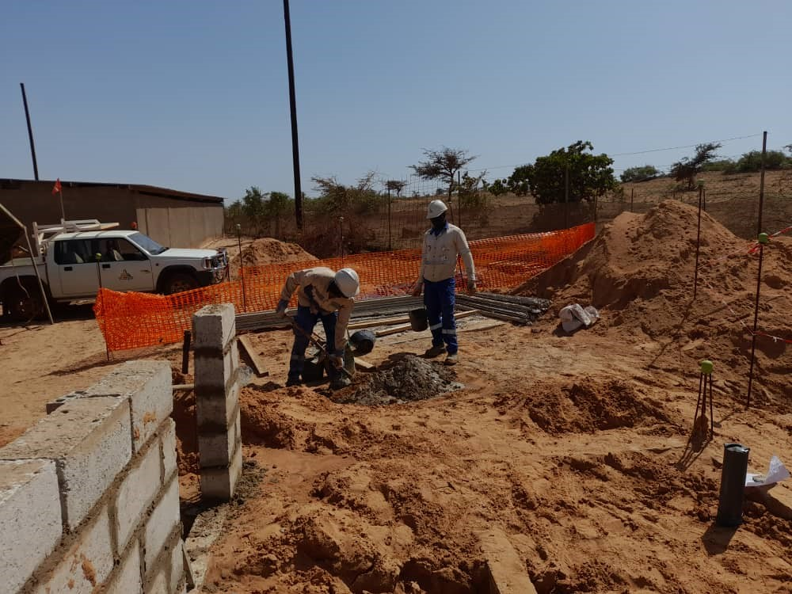
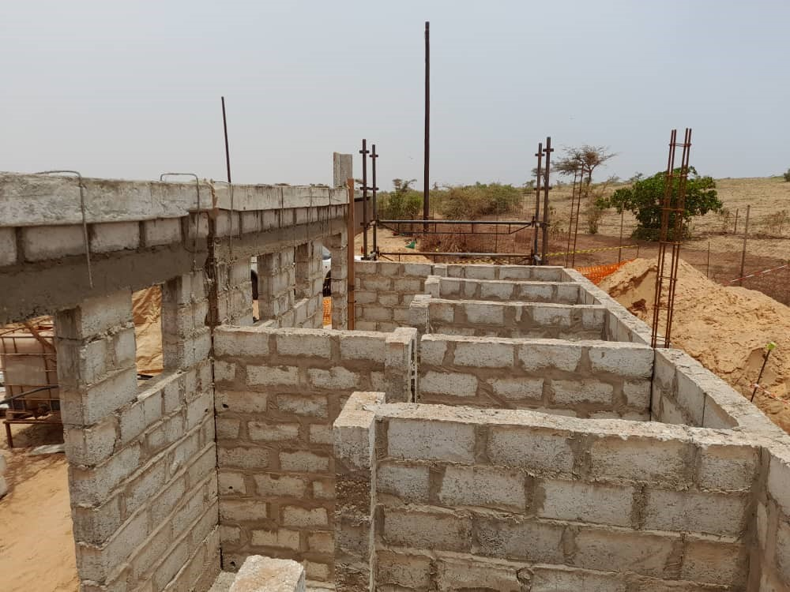
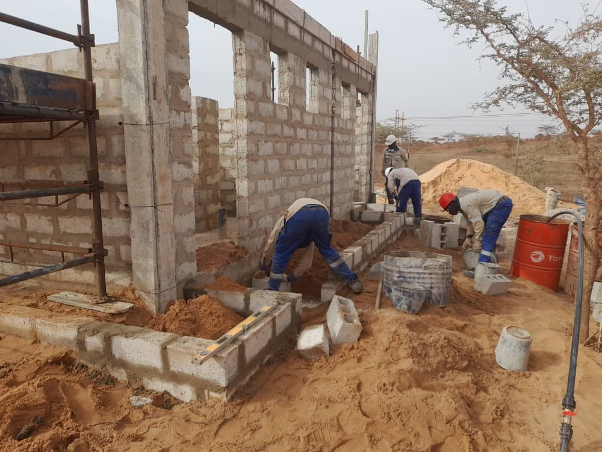

Nos activités
Depuis plus de 18 ans, EGAS intervient sur des chantiers variés au Sénégal. Bâtiment, travaux publics, aménagement agricole : découvrez ci-dessous les domaines dans lesquels nous mettons notre expérience à votre service.
Bâtiment
- Centre de formation des métiers du cuir à Méckhé — réhabilitation complète des espaces pédagogiques et ateliers
- Construction d'une villa R+1 à Méckhé — du gros œuvre aux finitions intérieures
- Construction de logements destinés au relogement des déplacés du GCO — projet mené en coordination avec les autorités locales



Travaux publics
- Sécurisation de la voie ferrée Méckhé–GCO — pose d'un cordon de protection le long des rails
- Installation des panneaux de la centrale solaire de Méckhé — travaux d'ancrage et de mise en place
- Réfection de la route de Touba — travaux de remise en état de la chaussée



Aménagement agricole
- Construction d'un bassin de rétention d'eau de 1 000 m³ — alimentation en eau d'une exploitation agricole
- Construction d'un poulailler de 300 m² — structure adaptée aux normes d'élevage avicole
- Désherbage et labour de champs — préparation des terres pour la mise en culture


